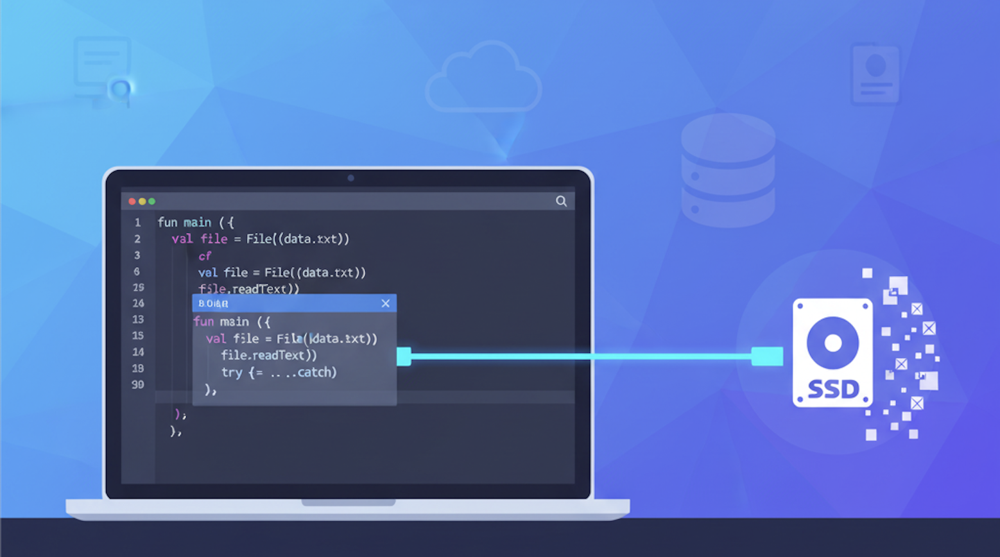
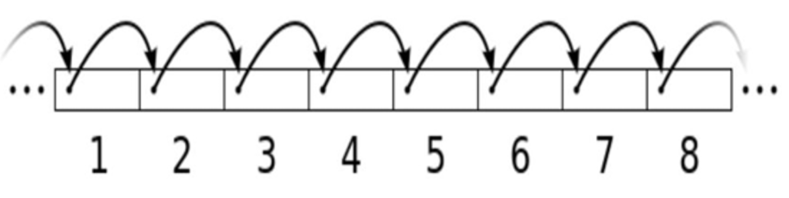
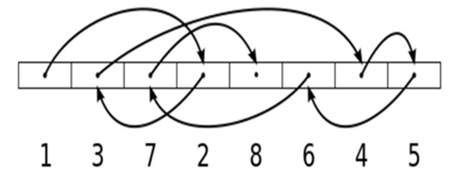
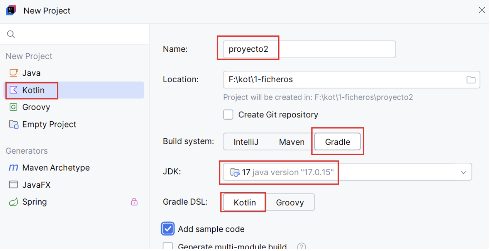

UD2 - Persistencia en ficheros

Resumen
En este documento se recogen los contenidos referentes al RA1 (desarrolla aplicaciones que gestionan información almacenada en ficheros identificando el campo de aplicación de los mismos y utilizando clases específicas).
Guía de uso
Estos apuntes están diseñados para que aprendas haciendo. A lo largo de la unidad, no solo veremos la teoría, sino que la aplicaremos directamente para construir, paso a paso, una aplicación completa de gestión de datos. El tema de la aplicación lo eliges tú, pero los pasos que daremos serán los mismos para todos. Siguiendo la unidad no solo habrás aprendido los conceptos, sino que tendrás una aplicación completa y funcional creada por ti.
Intercaladas con la teoría y con los ejemplos encontrarás tres tipos de cajas:
- 🔍 Ejecutar y analizar: "Estas cajas son para analizar y comprender en detalle el ejemplo de código proporcionado. Tu tarea es ejecutar ese código, observar la salida y asegurarte de entender cómo y por qué funciona."
- 🎯 Práctica para aplicar y construir: "Estas cajas son prácticas que debes realizar tú. Es el momento de ponerte a programar y aplicar lo que acabas de aprender. Son los objetivos que debes completar para avanzar. Cada una de estas prácticas es un bloque que debes programar para ir avanzando en tu proyecto final. En cada práctica ampliarás lo de las anteriores."
- 📁 Entrega: "Estas cajas son entregas de tu trabajo. Las entregas pueden ser parciales (el profesor te dará sugerencias de mejora) o finales (el profesor calificará el trabajo que has realizado). No todas las prácticas llevan asociada una entrega."
1. Introducción
Un fichero o archivo es una unidad de almacenamiento de datos en un sistema informático. Es un conjunto de información (secuencia de bytes) organizada y almacenada en un dispositivo de almacenamiento (disco duro, memoria USB o un servidor en la nube). Los datos guardados en ficheros persisten más allá de la ejecución de la aplicación que los trata. La utilización de ficheros es una alternativa sencilla y eficiente a las bases de datos.
Características de un fichero:
- Nombre: Cada fichero tiene un nombre único dentro de su directorio.
- Extensión: Indica su tipo (.txt para texto, .jpg para imágenes, etc).
- Ubicación: Directorios (carpetas) dentro del sistema de ficheros.
- Contenido: Texto, imágenes, vídeos, código fuente, bases de datos, etc.
- Permisos de acceso: Se pueden configurar para permitir o restringir la lectura, escritura o ejecución a determinados usuarios o programas.
Tipos de ficheros:
- De texto: Formato legible por humanos (.txt, .csv, .json, .xml).
- Binarios: Formato no legible directamente (.exe, .jpg, .mp3, .dat).
- De código fuente: Contienen instrucciones escritas en lenguajes de programación (.java, .kt, .py).
- De configuración: Almacenan parámetros de configuración de programas (.ini, .conf, .properties, .json).
- De bases de datos: Se utilizan para almacenar grandes volúmenes de datos estructurados (.db, .sql).
- Historial: de eventos o errores en un sistema (.log).
API para manejo de ficheros:
Java.nio (New IO) es una API disponible desde la versión 7 de Java que permite mejorar el rendimiento, así como simplificar el manejo de muchas operaciones. Funciona a través de interfaces y clases para que la máquina virtual Java tenga acceso a ficheros, atributos de ficheros y sistemas de ficheros. En los siguientes apartados veremos cómo trabajar con ella.
Formas de acceso:
El acceso a ficheros es una tarea fundamental en la programación, ya que permite leer y escribir datos persistentes. Hemos visto que hay diferentes tipos de ficheros, según sus características y necesidades existen dos formas principales de acceder a un fichero (secuencial y aleatorio):
- Acceso secuencial: Los datos se procesan en orden, desde el principio hasta el final del fichero. Es el más común y sencillo. Se usa cuando se desea leer todo el contenido o recorrer registro por registro. Por ejemplo lectura de un fichero de texto línea por línea, o de un fichero binario estructurado registro a registro.

- Acceso aleatorio: Permite saltar a una posición concreta del fichero sin necesidad de leer lo anterior. Es útil cuando los registros tienen un tamaño fijo y se necesita eficiencia (por ejemplo, ir directamente al registro 100). Requiere técnicas más avanzadas como el uso de
FileChannel,SeekableByteChanneloRandomAccessFile.

A lo largo de esta unidad se explicarán algunas funciones de manejo de ficheros que requieren librerías externas (dependencias). Utilizaremos Gradle para descargarlas automáticamente en nuestros proyectos.
Para crear un proyecto Kotlin con Gradle en IntelliJ haremos clic en New Project, indicamos la información de la siguiente imagen, haremos clic en el botón Create y esperaremos a que IntelliJ prepare el proyecto.

A medida que necesitemos utilizar dependencias en nuestro proyecto, las iremos añadiendo al fichero build.gradle.kts en la sección de dependencias. Si después de añadirlas no se descargan automáticamente, abrir la ventana Gradle (lateral derecho de IntelliJ) y hacer clic en el botón de actualizar.
🎯 Práctica 1: Proyecto Kotlin con Gradle
En esta práctica has de crear un proyecto que irás ampliando a lo largo de toda la unidad. Realiza lo siguiente:
- Piensa en una aplicación de gestión orientada al sector que prefieras y busca un nombre original (será el nombre de tu proyecto).
- Crea un nuevo proyecto con Gradle y comprobar que se ejecuta correctamente (puedes utilizar el código de ejemplo de IntelliJ).